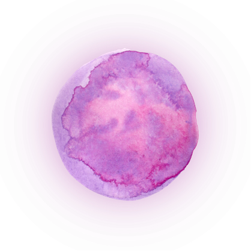
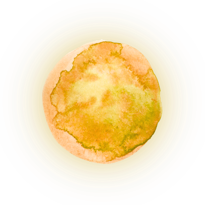
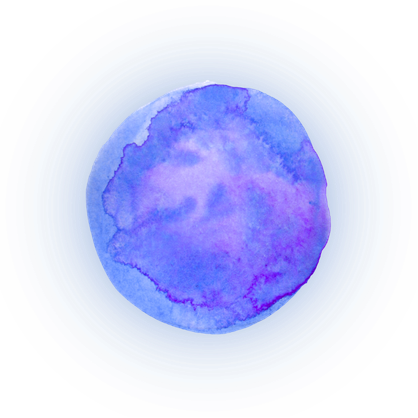
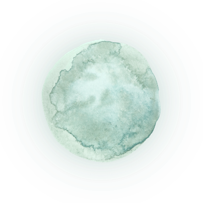
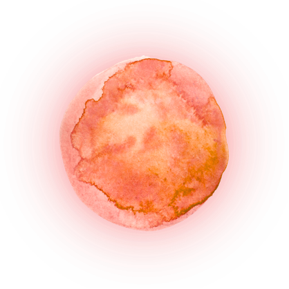
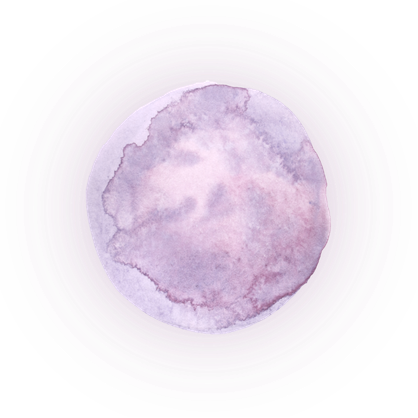
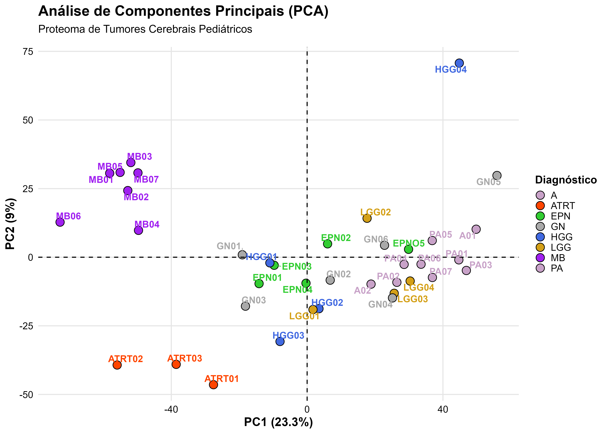

Correlação de Pearson
Carregando valores de Pearson...
As amostras foram obtidas através de parceria com o Hospital Pequeno Príncipe - Curitiba, PR.
Após obtidas, as amostras foram armazenadas, processadas e submetidas a análise de espectrometria de massas. O equipamento foi um Orbitrap Fusion Lumus (Thermo Fisher Scientific). Cada amostra foi analisada em duplicata técnica. Para mais detalhes, conferir arquivo da dissertação.







8439 proteínas identificadas
ver matrizmatriz após filtragem: 5753 proteínas

Carregando valores de Pearson...
Carregando valores de Spearman...